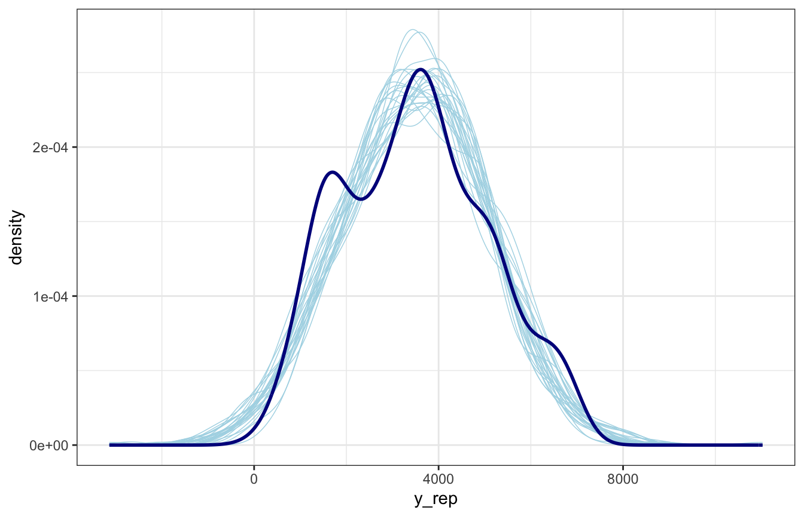
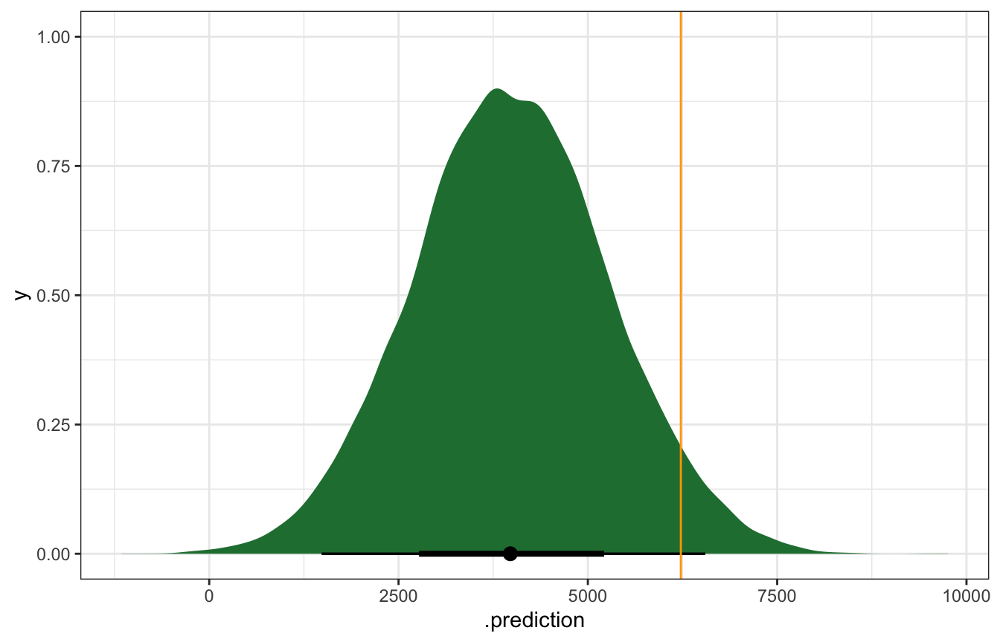

library(bayesrules)
library(tidyverse)
library(brms)
library(cmdstanr)
library(rstanarm)
library(broom.mixed)
library(tidybayes)
library(ggdist)
library(patchwork)
library(modelr)
# Plot stuff
clrs <- MetBrewer::met.brewer("Lakota", 6)
theme_set(theme_bw())
# Seed stuff
set.seed(1234)
BAYES_SEED <- 1234
data(bikes, package = "bayesrules")
bikes <- bikes |>
mutate(temp_feel_centered = scale(temp_feel, scale = FALSE),
temp_feel_c = as.numeric(temp_feel_centered))
temp_details <- attributes(bikes$temp_feel_centered) %>%
set_names(janitor::make_clean_names(names(.)))Reading notes
Evaluating regression models
\[ \require{mathtools} \]
The setup
Back to the model from chapter 9, modeling Capital Bikeshare rides based on daily temperatures:
\[ \begin{aligned} Y_i &\sim \mathcal{N}(\mu_i, \sigma) \text{, or} & \text{[McElreath's syntax]} \\ Y_i \mid \beta_0, \beta_1, \sigma &\stackrel{\text{ind}}{\sim} \mathcal{N}(\mu_i, \sigma^2) & \text{[Bayes Rules!'s syntax]} \\ \mu_i &= \beta_{0c} + \beta_1 X_i \\ \\ \beta_{0c} &\sim \mathcal{N}(5000, 1000) \\ \beta_{1} &\sim \mathcal{N}(100, 40) \\ \sigma &\sim \operatorname{Exponential}(1 / 1250) \end{aligned} \]
bike_rstanarm <- stan_glm(
rides ~ temp_feel_c,
data = bikes,
family = gaussian(),
prior_intercept = normal(5000, 1000),
prior = normal(100, 40),
prior_aux = exponential(0.0008),
chains = 4, iter = 5000*2, seed = 84735, refresh = 0
)priors <- c(prior(normal(5000, 1000), class = Intercept),
prior(normal(100, 40), class = b, coef = "temp_feel_c"),
prior(exponential(0.0008), class = sigma))
bike_brms <- brm(
bf(rides ~ temp_feel_c),
data = bikes,
family = gaussian(),
prior = priors,
chains = 4, iter = 5000*2, seed = BAYES_SEED,
backend = "cmdstanr", refresh = 0
)
## Start sampling10-stan/bike-better.stan
data {
int<lower = 0> n;
vector[n] Y;
vector[n] X;
}
parameters {
real beta0;
real beta1;
real<lower = 0> sigma;
}
transformed parameters {
vector[n] mu;
mu = beta0 + beta1 * X;
}
model {
Y ~ normal(mu, sigma);
beta0 ~ normal(5000, 1000);
beta1 ~ normal(100, 40);
sigma ~ exponential(0.0008);
}
generated quantities {
vector[n] Y_rep;
vector[n] log_lik;
for (i in 1:n) {
log_lik[i] = normal_lpdf(Y[i] | mu[i], sigma);
Y_rep[i] = normal_rng(mu[i], sigma);
}
}bike_stan_better <- cmdstan_model("10-stan/bike-better.stan")bike_stan_samples <- bike_stan_better$sample(
data = list(n = nrow(bikes), Y = bikes$rides, X = bikes$temp_feel_c),
parallel_chains = 4, iter_warmup = 5000, iter_sampling = 5000,
refresh = 0, seed = BAYES_SEED
)
## Running MCMC with 4 parallel chains...
##
## Chain 1 finished in 2.5 seconds.
## Chain 2 finished in 2.5 seconds.
## Chain 3 finished in 2.5 seconds.
## Chain 4 finished in 2.5 seconds.
##
## All 4 chains finished successfully.
## Mean chain execution time: 2.5 seconds.
## Total execution time: 2.6 seconds.Results:
tidy(bike_rstanarm, effects = c("fixed", "aux"),
conf.int = TRUE, conf.level = 0.8)
## # A tibble: 4 × 5
## term estimate std.error conf.low conf.high
## <chr> <dbl> <dbl> <dbl> <dbl>
## 1 (Intercept) 3487. 58.0 3413. 3561.
## 2 temp_feel_c 82.2 5.08 75.7 88.7
## 3 sigma 1282. 40.9 1231. 1336.
## 4 mean_PPD 3487. 82.0 3382. 3593.tidy(bike_brms, conf.int = TRUE, conf.level = 0.8) |>
select(-c(effect, component, group))
## # A tibble: 3 × 5
## term estimate std.error conf.low conf.high
## <chr> <dbl> <dbl> <dbl> <dbl>
## 1 (Intercept) 3487. 57.5 3414. 3561.
## 2 temp_feel_c 82.1 5.08 75.6 88.6
## 3 sd__Observation 1283. 40.3 1232. 1336.bike_stan_samples$print(variables = c("beta0", "beta1", "sigma"),
"mean", "median", "sd", ~quantile(.x, probs = c(0.1, 0.9)))
## variable mean median sd 10% 90%
## beta0 3487.16 3486.85 57.13 3414.32 3560.02
## beta1 82.12 82.10 5.06 75.68 88.58
## sigma 1282.72 1281.84 40.44 1231.39 1335.3110.2: How wrong is the model?
The model is definitely wrong—we just care about how wrong it is. There are three assumptions in this model:
\[ \begin{aligned} Y_i \mid \beta_0, \beta_1, \sigma &\overbrace{\stackrel{\text{ind}}{\sim}}^{\mathclap{\text{Assumption 1}}} \underbrace{\mathcal{N}(\mu_i, \sigma^2)}_{\text{Assumption 3}}\\ \mu_i &= \underbrace{\beta_{0c} + \beta_1 X_i}_{\text{Assumption 2}} \end{aligned} \]
- When conditioned on \(X\), the observed data \(Y_i\) for each case \(i\) is independent of the observed data for any other case (like \(Y_j\), \(Y_k\), etc)
- The typical \(Y\) outcome can be written as a linear function of \(X\), or \(\mu = \beta_0 + \beta_1 X\)
- At any \(X\) value, \(Y\) varies normally around \(\mu\) with a consistent variability of \(\sigma\)
We can use statsy tests for assumption 1, but we don’t really need to—we can use logic instead. By itself, ridership count \(Y\) is highly correlated over time, but after controlling for \(X\), it’s likely that the autocorrelation with \(Y\) is cancelled out or controlled away. We’re probably reasonably okay.
For assumptions 2 and 3, we can use a scatterplot and see if (1) it looks linear and (2) it looks normally distributed around the line:
ggplot(bikes, aes(x = temp_feel, y = rides)) +
geom_point() +
geom_smooth(method = "lm", se = FALSE)
Looks linear to me.
But just eyeballing it isn’t great. We can test the assumptions more formally with a posterior predictive check:
If the combined model assumptions are reasonable, then our posterior model should be able to simulate ridership data that’s similar to the original data.
We can check that by using the \(\beta_0\), \(\beta_1\), and \(\sigma\) parameters from the chains to generate predictions for each of the MCMC draws. Here’s how that works behind the scenes:
We have 20,000 sets of intercepts, slopes, and sigmas
bike_brms |>
spread_draws(b_Intercept, b_temp_feel_c, sigma) |>
select(starts_with("b_"), sigma)
## # A tibble: 20,000 × 3
## b_Intercept b_temp_feel_c sigma
## <dbl> <dbl> <dbl>
## 1 3457. 80.5 1281.
## 2 3525. 80.3 1240.
## 3 3470. 80.1 1259.
## 4 3500. 80.3 1215
## 5 3521. 80.7 1336.
## 6 3569. 86.7 1272.
## 7 3562. 87.6 1290.
## 8 3412. 76.7 1271.
## 9 3475. 87.9 1329.
## 10 3490. 74.2 1246.
## # … with 19,990 more rowsLet’s take just the first draw and plug the original dataset into that model to calculate \(\mu\), then draw from a random normal distribution using \(\mu\) and \(\sigma\):
first_draw <- bike_brms |>
spread_draws(b_Intercept, b_temp_feel_c, sigma) |>
slice(1)
one_rep <- bikes |>
mutate(mu = first_draw$b_Intercept + (first_draw$b_temp_feel_c * temp_feel_c),
y_rep = rnorm(500, mu, first_draw$sigma))
one_rep |>
select(temp_feel, temp_feel_c, rides, y_rep) |>
head(5)
## temp_feel temp_feel_c rides y_rep
## 1 64.72625 -4.417453 654 2885.575
## 2 49.04645 -20.097253 1229 2652.113
## 3 51.09098 -18.052723 1454 2775.513
## 4 52.63430 -16.509403 1518 -1045.352
## 5 50.79551 -18.348193 1362 1839.174And we can plot the two distributions to compare the model to the actual data:
ggplot(one_rep, aes(x = y_rep)) +
geom_density(color = "lightblue") +
geom_density(aes(x = rides), color = "darkblue")Choose a bunch of posterior draws, plug them in, and you’ve got a homegrown pp_check()!
lotsa_draws <- bike_brms |>
spread_draws(b_Intercept, b_temp_feel_c, sigma) |>
slice_sample(n = 25) |>
mutate(id = 1:n())
lotsa_reps <- lotsa_draws |>
mutate(mu = map2(b_Intercept, b_temp_feel_c, ~.x + .y * bikes$temp_feel_c),
y_rep = map2(mu, sigma, ~rnorm(500, .x, .y))) |>
unnest(y_rep)
ggplot(lotsa_reps, aes(x = y_rep)) +
geom_density(aes(group = id), color = "lightblue", size = 0.25) +
geom_density(data = bikes, aes(x = rides),
color = "darkblue", size = 1)
And here’s pp_check() for comparison:
pp_check(bike_brms, type = "dens_overlay", ndraws = 25)Heck yes.
The plot looks okay-ish. It picks up the average and the general range, but it doesn’t pick up the bimodality in ridership.
10.3: How accurate are the posterior predictive models?
A good model should be able to accurately predict new values of $Y. Here are 3 ways to evaluate the quality of predictions:
10.3.1: Posterior predictive summaries
How well does the model predict the data we used to build the model? We can check the fit for October 22, 2012 for fun:
october22 <- bikes |>
filter(date == "2012-10-22") |>
select(temp_feel, rides)
october22
## temp_feel rides
## 1 75.46478 6228The temperature that day was 75˚, so let’s simulate the posterior predictive distribution for a day that’s 75˚:
bike_rstanarm |>
predicted_draws(newdata = tibble(temp_feel_c = 75 - temp_details$scaled_center)) |>
ggplot(aes(x = .prediction)) +
stat_halfeye(fill = clrs[5]) +
geom_vline(xintercept = october22$rides, color = "orange")bike_brms |>
predicted_draws(newdata = tibble(temp_feel_c = 75 - temp_details$scaled_center)) |>
ggplot(aes(x = .prediction)) +
stat_halfeye(fill = clrs[5]) +
geom_vline(xintercept = october22$rides, color = "orange")
predict_75_stan <- bike_stan_samples |>
spread_draws(beta0, beta1, sigma) |>
mutate(mu = beta0 + (beta1 * (75 - temp_details$scaled_center)),
y_new = rnorm(n(), mu, sigma))
predict_75_stan |>
ggplot(aes(x = y_new)) +
stat_halfeye(fill = clrs[5]) +
geom_vline(xintercept = october22$rides, color = "orange")That orange line is kind of far out there—is that a problem? We can calculate the prediction error, or the distance between the observed \(Y\) and the posterior predictive mean \(Y'\), or \(Y - Y'\). In this case we under-predicted rids. There were 6,228 actual rides; the model only predicted 4,000ish:
bike_brms |>
predicted_draws(newdata = tibble(temp_feel_c = 75 - temp_details$scaled_center)) |>
ungroup() |>
summarize(actual_rides = october22$rides,
avg_prediction = mean(.prediction),
error = october22$rides - avg_prediction)
## # A tibble: 1 × 3
## actual_rides avg_prediction error
## <int> <dbl> <dbl>
## 1 6228 3964. 2264.We can also think about the relative distance or error by dividing by the standard deviation. In this standardized scale, values beyond 2 or 3 standard deviations are pretty far off. Here we’re 1.76 standard deviations off from the mean, which is fine I guess:
bike_brms |>
predicted_draws(newdata = tibble(temp_feel_c = 75 - temp_details$scaled_center)) |>
ungroup() |>
summarize(actual_rides = october22$rides,
avg_prediction = mean(.prediction),
error = october22$rides - avg_prediction,
error_scaled = error / sd(.prediction))
## # A tibble: 1 × 4
## actual_rides avg_prediction error error_scaled
## <int> <dbl> <dbl> <dbl>
## 1 6228 3963. 2265. 1.77Pretty much every observed point falls within the 95% prediction interval, but that range is big (range of ≈4000 rides!)
bike_brms |>
add_predicted_draws(newdata = bikes) |>
ungroup() |>
mutate(error = rides - .prediction) |>
summarize(mae = median(abs(error)),
mae_scaled = median(abs(error / sd(.prediction))))
## # A tibble: 1 × 2
## mae mae_scaled
## <dbl> <dbl>
## 1 1251. 0.792bike_brms |>
add_predicted_draws(newdata = bikes, ndraws = 100) |>
ggplot(aes(x = temp_feel)) +
stat_interval(aes(y = .prediction, color_ramp = stat(level)), alpha = 0.25,
.width = c(0.5, 0.89, 0.95), color = clrs[3]) +
geom_point(aes(y = rides), size = 2, pch = 21, color = "white", fill = "black")We can get more official measures with bayesrules::prediction_summary(), but it only works with rstanarm:
bike_rstanarm |> prediction_summary(data = bikes)
## mae mae_scaled within_50 within_95
## 1 991.2531 0.7658091 0.434 0.96810.3.2: Cross validation
We can use cross validation with \(k\) folds: hold out 50 rows for testing, use 450 rows for training, to that a bunch of times with different holdout rows. Leave-one-out CV builds the model with 499 rows, holding just one out as the test data.
set.seed(84735)
cv_procedure <- prediction_summary_cv(
model = bike_rstanarm, data = bikes, k = 10)cv_procedure$folds
## fold mae mae_scaled within_50 within_95
## 1 1 990.2897 0.7710331 0.46 0.98
## 2 2 965.8851 0.7434397 0.42 1.00
## 3 3 950.3186 0.7298511 0.42 0.98
## 4 4 1018.1896 0.7905312 0.46 0.98
## 5 5 1161.8012 0.9085403 0.36 0.96
## 6 6 937.3706 0.7322373 0.46 0.94
## 7 7 1269.8300 1.0054441 0.32 0.96
## 8 8 1111.8921 0.8606423 0.36 1.00
## 9 9 1098.8982 0.8676561 0.40 0.92
## 10 10 786.3265 0.6053804 0.56 0.96cv_procedure$cv
## mae mae_scaled within_50 within_95
## 1 1029.08 0.8014756 0.422 0.968kfold_brms <- bikes |>
crossv_kfold(k = 10) |>
mutate(model = map(train, ~{
brm(
bf(rides ~ temp_feel_c),
data = .,
family = gaussian(),
prior = priors,
chains = 4, iter = 5000*2, seed = BAYES_SEED,
backend = "cmdstanr", refresh = 0
)
}))
## Start sampling
## Start sampling
## Start sampling
## Start sampling
## Start sampling
## Start sampling
## Start sampling
## Start sampling
## Start sampling
## Start samplingmae_kfold_brms <- kfold_brms |>
mutate(predictions = map2(test, model, ~{
.x |>
as_tibble() |>
add_predicted_draws(.y) |>
ungroup()
})) |>
mutate(mae = map(predictions, ~{
.x |>
mutate(error = rides - .prediction) |>
summarize(mae = median(abs(error)),
mae_scaled = median(abs(error / sd(.prediction))))
}))mae_kfold_brms |>
select(mae) |>
unnest(mae)
## # A tibble: 10 × 2
## mae mae_scaled
## <dbl> <dbl>
## 1 1247. 0.783
## 2 1249. 0.817
## 3 1190. 0.753
## 4 1230. 0.745
## 5 1254. 0.811
## 6 1322. 0.833
## 7 1309. 0.802
## 8 1298. 0.834
## 9 1180. 0.747
## 10 1274. 0.837mae_kfold_brms |>
select(mae) |>
unnest(mae) |>
summarize(across(everything(), mean))
## # A tibble: 1 × 2
## mae mae_scaled
## <dbl> <dbl>
## 1 1255. 0.796kfold_stan <- bikes |>
crossv_kfold(k = 10) |>
mutate(model = map(train, ~{
# Stan likes working with data frames, not whatever the kfold split is
df <- as_tibble(.)
bike_stan_better$sample(
data = list(n = nrow(df), Y = df$rides, X = df$temp_feel_c),
parallel_chains = 4, iter_warmup = 5000, iter_sampling = 5000,
refresh = 0, seed = BAYES_SEED
)
}))Phew this is complex and creates a massively huge R object (like multiple GBs when trying to write it as RDS), and it makes Quarto choke when rendering, so I don’t actually run it here. Here’s the code though—it works when running interactively in RStudio (but takes a long time still).
mae_kfold_stan <- kfold_stan |>
mutate(predictions = map2(test, model, ~{
df <- .x |> as_tibble()
draws <- .y |>
spread_draws(beta0, beta1, sigma)
df |>
mutate(mu = map(temp_feel_c, ~draws$beta0 + draws$beta1 * .),
yrep = map(mu, ~rnorm(length(.), ., draws$sigma))) |>
unnest(yrep)
})) |>
mutate(mae = map(predictions, ~{
.x |>
mutate(error = rides - yrep) |>
summarize(mae = median(abs(error)),
mae_scaled = median(abs(error / sd(yrep))))
}))mae_kfold_stan |>
select(mae) |>
unnest(mae)# This is the saved RDS object that contains mae_kfold_stan |> select(mae) |> unnest(mae)
mae_kfold_stan_summary
## # A tibble: 10 × 2
## mae mae_scaled
## <dbl> <dbl>
## 1 1386. 0.896
## 2 1202. 0.786
## 3 1246. 0.779
## 4 1211. 0.736
## 5 1238. 0.769
## 6 1266. 0.803
## 7 1306. 0.843
## 8 1277. 0.823
## 9 1207. 0.756
## 10 1225. 0.787mae_kfold_stan |>
select(mae) |>
unnest(mae) |>
summarize(across(everything(), mean))mae_kfold_stan_summary |>
summarize(across(everything(), mean))
## # A tibble: 1 × 2
## mae mae_scaled
## <dbl> <dbl>
## 1 1256. 0.79810.3.3: Expected log-predictive density (ELPD)
The intuition behind the expected log-predictive density (or ELPD) is that we want higher values of the pdf at observed data point within the posterior for each prediction. Like, for instance, say we have these two pdfs for two predicted values, with the actual value of \(Y\) marked at the line:
p1 <- ggplot() +
geom_function(fun = ~dnorm(., 0, 1)) +
annotate(geom = "segment", x = 0.2, xend = 0.2, y = -Inf, yend = dnorm(0.2, 0, 1),
linetype = 21) +
annotate(geom = "label", x = 0.2, y = 0.01, label = "Actual y", fontface = "bold") +
xlim(c(-4, 4)) +
theme(axis.text = element_blank(), axis.ticks = element_blank()) +
labs(x = "Posterior predictive distribution for a single Y′", y = "Density",
title = "Scenario 1")
p2 <- ggplot() +
geom_function(fun = ~dnorm(., 0, 1)) +
annotate(geom = "segment", x = 1.8, xend = 1.8, y = -Inf, yend = dnorm(1.8, 0, 1),
linetype = 21) +
annotate(geom = "label", x = 1.8, y = 0.01, label = "Actual y", fontface = "bold") +
xlim(c(-4, 4)) +
theme(axis.text = element_blank(), axis.ticks = element_blank()) +
labs(x = "Posterior predictive distribution for a single Y′", y = "Density",
title = "Scenario 2")
p1 | p2In this case, scenario 1 is better and more accurate—the actual observed value of y fits more nicely in the posterior predictive distribution for that y. We can assign a numerical value to the length of that line (or the value of the pdf at that point). For whatever reason, Bayesians log that distance, so we want the average log posterior predictive density at each new data point. We do this with leave-one-out CV (using the one hold-out data point as the actual data in the scenario above).
These ELPD values are on a weird meaningless scale that you can’t really interpret directly. You can compare them across models, though, and higher is better.
Calculating the log likelihood is tricky and has to be defined in the Stan model. rstanarm and brms handle this automatically; with raw Stan, it has to be done in the generated quantities block (like Monica Alexander does here)
loo(bike_rstanarm)
##
## Computed from 20000 by 500 log-likelihood matrix
##
## Estimate SE
## elpd_loo -4289.0 13.1
## p_loo 2.5 0.2
## looic 8578.1 26.2
## ------
## Monte Carlo SE of elpd_loo is 0.0.
##
## All Pareto k estimates are good (k < 0.5).
## See help('pareto-k-diagnostic') for details.loo(bike_brms)
##
## Computed from 20000 by 500 log-likelihood matrix
##
## Estimate SE
## elpd_loo -4289.0 13.1
## p_loo 2.5 0.2
## looic 8578.0 26.2
## ------
## Monte Carlo SE of elpd_loo is 0.0.
##
## All Pareto k estimates are good (k < 0.5).
## See help('pareto-k-diagnostic') for details.bike_stan_samples$loo()
##
## Computed from 20000 by 500 log-likelihood matrix
##
## Estimate SE
## elpd_loo -4289.0 13.1
## p_loo 2.5 0.2
## looic 8578.0 26.2
## ------
## Monte Carlo SE of elpd_loo is 0.0.
##
## All Pareto k estimates are good (k < 0.5).
## See help('pareto-k-diagnostic') for details.10.4: How good is the MCMC simulation vs. how good is the model?
In general with all these diagnostics, we’re exploring two different questions:
- How good is the MCMC simulation? Is it long enough, are the chains well-mixed, does it converge, etc.?
- How good is the model? Are the assumptions reasonable, is the model fair, and does it create good predictions?